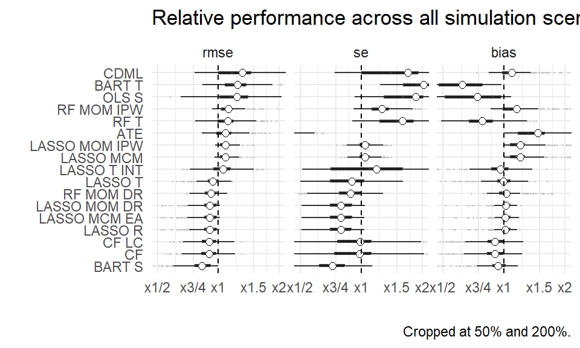
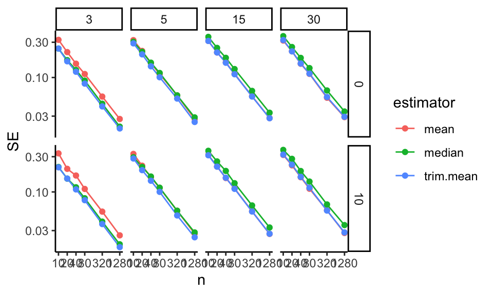
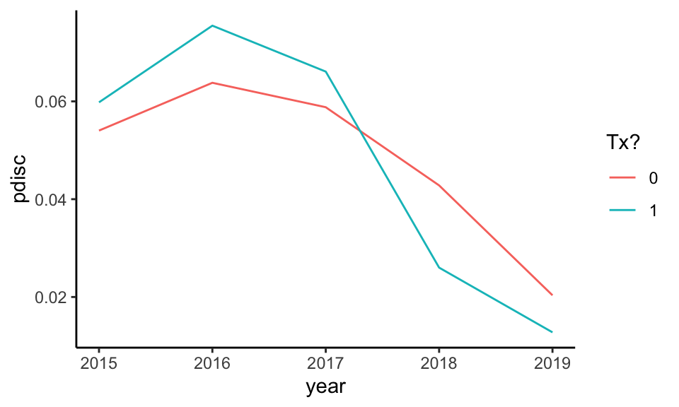
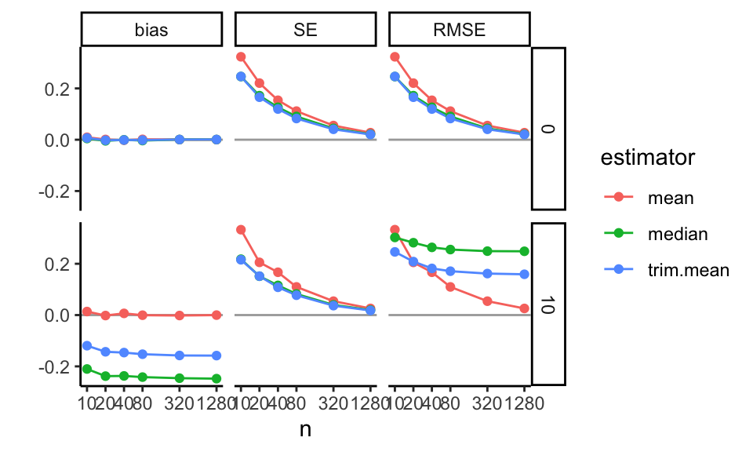
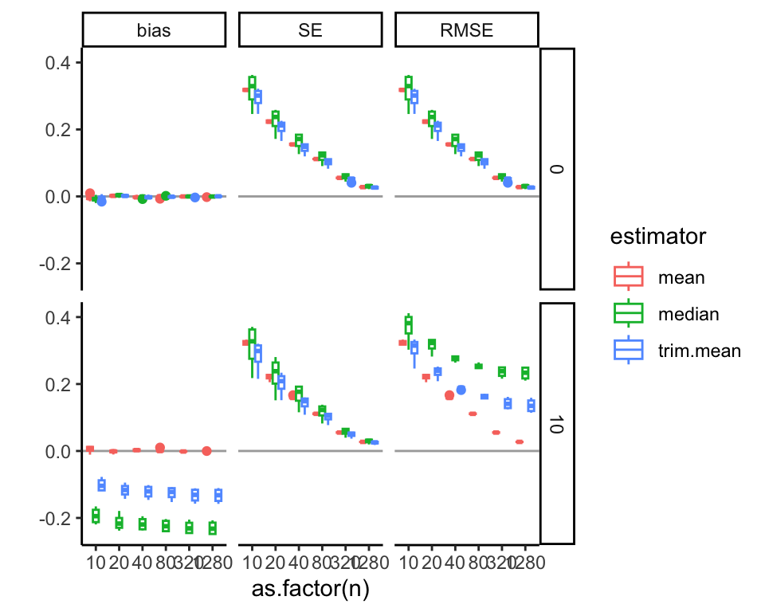

Chapter 15 Case study: Comparing different estimators
In a previous exercise (See Exercise 11.5.1), you wrote a simulation to compare the mean, median, and trimmed mean for estimating the same thing. This exercise is analogous to what we often are doing in a paper: pretend we have “invented” the trimmed mean and want to demonstrate its utility.
In this chapter, we walk through a deeper analysis of the results from such a simulation. In this simulation we have three factors: sample size, a degrees of freedom to control the thickness of the tails (thicker tails means higher chance of outliers), and a degree of skew (how much the tails tend to the right vs. the left). For our data-generation function we use a scaled skew \(t\)-distribution so the standard deviation will always be 1 and the mean will always be 0 while we change the fatness of the tails. See the attached code file for the simulation. Our final multi-factor simulation results look like this (we ran 1000 trials per scenario):
## # A tibble: 144 × 8
## n df0 skew seed estimator RMSE
## <dbl> <dbl> <dbl> <dbl> <chr> <dbl>
## 1 10 3 0 42242459 mean 0.323
## 2 10 3 0 42242459 median 0.246
## 3 10 3 0 42242459 trim.mean 0.246
## 4 10 3 10 42242476 mean 0.333
## 5 10 3 10 42242476 median 0.303
## 6 10 3 10 42242476 trim.mean 0.246
## 7 10 5 0 42242493 mean 0.320
## 8 10 5 0 42242493 median 0.304
## 9 10 5 0 42242493 trim.mean 0.290
## 10 10 5 10 42242510 mean 0.327
## # ℹ 134 more rows
## # ℹ 2 more variables: bias <dbl>, SE <dbl>Our first question is how sample size impacts our different estimators’ precision. We plot:
ns = unique( results$n )
ggplot( results, aes(x=n, y=SE, col=estimator) ) +
facet_grid( skew ~ df0 ) +
geom_line() + geom_point() +
scale_x_log10( breaks=ns )
The above doesn’t show differences clearly because all the SEs goes to zero as \(n\) increases. One move when we see heavy trends like this is to log our outcome, or otherwise rescale. The logging version shows differences are relatively constant given changing sample size.
ggplot( results, aes(x=n, y=SE, col=estimator) ) +
facet_grid( skew ~ df0 ) +
geom_line() + geom_point() +
scale_x_log10( breaks=ns ) +
scale_y_log10()
One step better would be to rescale using our knowledge of standard errors. If we scale by the square root of sample size, we should get horizontal lines. We now clearly see the trends.
ggplot( results, aes(x=n, y=scaleSE, col=estimator) ) +
facet_grid( skew ~ df0 ) +
geom_line() + geom_point() +
scale_x_log10( breaks=ns )
Overall, the scaled error of the mean is stable across the different distributions. The trimmed mean is a real advantage when the degrees of freedom are small (note the blue line is far below the red line on the left hand plot): we are cropping outliers that destabilize our estimate which leads to great wins. As the distribution grows more normal (i.e., as the degrees of freedom increases), this is no longer an advantage and the trimmed mean gets closer to the mean in terms of performance. We might think we should be penalized slightly by having dropped 10% of our data, making the standard errors slightly larger: if this is the case, then it is not large as the MCSE swamps it (the red and blue line are basically overlapping).
The median is not able to take advantage of the nuances of the individual observations in the data because it is entirely determined by the middle value. When outliers cause real concern, this cost is minimal. When outliers are not a concern, the median is just worse.
Overall, we see for precision, the trimmed mean seems an excellent choice: in the presence of outliers it is far more stable than the mean, and when there are no outliers the cost of using it is small.
In terms of thinking about designing simulation studies, we see clear visual displays of simulation results can tell very clear stories. Eschew complicated tables with lots of numbers.
15.1 Bias-variance tradeoffs
We just looked at the precision of our three estimators, but we do not take into account bias. In our data generating processes, our median is not the same as the mean. As a diagnostic we can generate large datasets for each value of our simulation parameters, and compare the mean and median:
## Loading required package: stats4##
## Attaching package: 'sn'## The following object is masked from 'package:psych':
##
## tr## The following object is masked from 'package:lubridate':
##
## dst## The following object is masked from 'package:stats':
##
## sdvals = expand.grid( df0 = unique( results$df0 ),
skew = unique( results$skew ) )
vals$n = 1000000
res <- pmap_df( vals, \(n,df0,skew) {
d <- gen.data(n,df0,skew)
tibble( df0=df0, skew=skew,
mean = mean(d),
median = median(d),
sd = sd(d) )
} )
knitr::kable( res, digits=2 )| df0 | skew | mean | median | sd |
|---|---|---|---|---|
| 3 | 0 | 0 | 0.00 | 1.01 |
| 5 | 0 | 0 | 0.00 | 1.00 |
| 15 | 0 | 0 | 0.00 | 1.00 |
| 30 | 0 | 0 | 0.00 | 1.00 |
| 3 | 10 | 0 | -0.25 | 1.00 |
| 5 | 10 | 0 | -0.25 | 1.00 |
| 15 | 10 | 0 | -0.21 | 1.00 |
| 30 | 10 | 0 | -0.21 | 1.00 |
Our trimmed estimator now has a cost: trimming could cause bias. The more extreme trimmed estimator, the median, would in fact be systematically off by a lot under the skewed scenarios.
Our trimming, etc., is biased if we think of our goal as estimating the mean: we tend to cut extreme right tail values, but there are no extreme left tail values to cut. But if the trimmed estimators are much more stable, we might still wish to use them.
Before we just looked at the SE. But we actually want to know the standard error, bias, and overall error (RMSE). Can we plot all these on a single plot? Yes we can! To plot, we first gather our outcomes to make a long form dataframe of results:
res2 = pivot_longer( results, cols = c( RMSE, bias, SE ),
names_to="Measure",
values_to="value" )
res2 = mutate( res2,
Measure = factor( Measure, levels=c("bias", "SE","RMSE" )))And then we plot, making a facet for each outcome of interest. We need to bundle because we have a lot of factors (one now being measure). We first look at boxplots:
ns = unique( res2$n )
ggplot( res2, aes(x=as.factor(n), y=value, col=estimator ) ) +
facet_grid( skew ~ Measure ) +
geom_hline( yintercept=0, col="darkgrey" ) +
geom_boxplot( position = "dodge" ) +
labs( y="" )
We can also subset to look at how these trade-offs play out when df0 = 3, where we are seeing the largest benefits from trimming in our prior analysis.
We can then use lines to show the trends, which is a bit clearer:
ggplot( filter( res2, df0 == 3 ),
aes(x=n, y=value, col=estimator ) ) +
facet_grid( skew ~ Measure ) +
geom_hline( yintercept=0, col="darkgrey" ) +
geom_line() + geom_point() +
scale_x_log10( breaks=ns ) +
labs( y="" )
Or maybe we can aggregate without losing too much information:
res2agg <- group_by( res2, n, estimator, skew, Measure ) %>%
summarise( value = mean(value), .groups = "drop" )
ggplot( filter( res2, df0 == 3 ), aes(x=n, y=value, col=estimator ) ) +
facet_grid( skew ~ Measure ) +
geom_hline( yintercept=0, col="darkgrey" ) +
geom_line() + geom_point() +
scale_x_log10( breaks=ns ) +
labs( y="" )
In these Bias-SE-RMSE plots, we see how different estimators have different biases and different uncertainties. The bias is negative for our trimmed estimators because we are losing the big outliers above and so getting answers that are too low.
The RMSE captures the trade-off in terms of what estimator gives the lowest overall error. For this distribution, the mean wins as the sample size increases because the bias basically stays the same and the SE drops. But for smaller samples the trimming is superior. The median (essentially trimming 50% above and below) is overkill and has too much negative bias.
From a simulation study point of view, notice how we are looking at three different qualities of our estimators. Some people really care about bias, some care about RMSE. By presenting all results we are transparent about how the different estimators operate.
Next steps would be to also examine the associated estimated standard errors for the estimators, seeing if these estimates of estimator uncertainty are good or poor. This leads to investigation of coverage rates and similar.